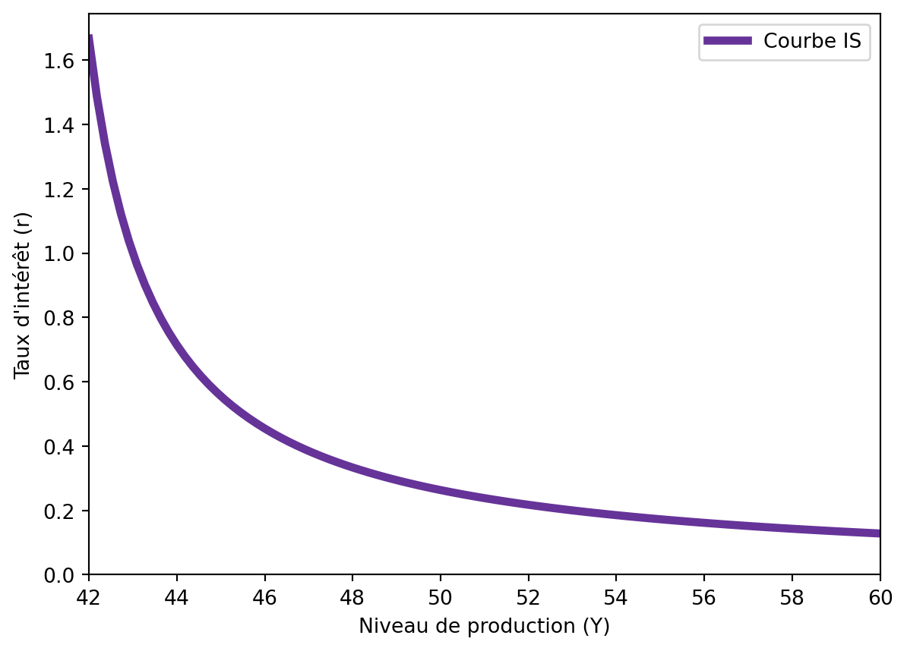
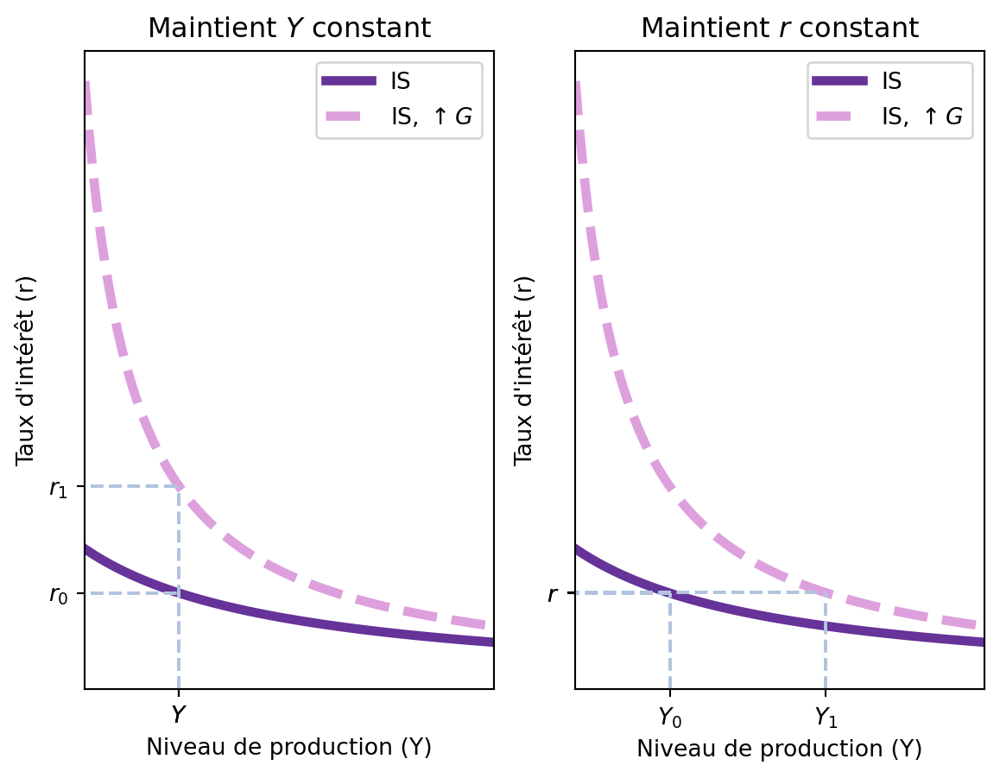
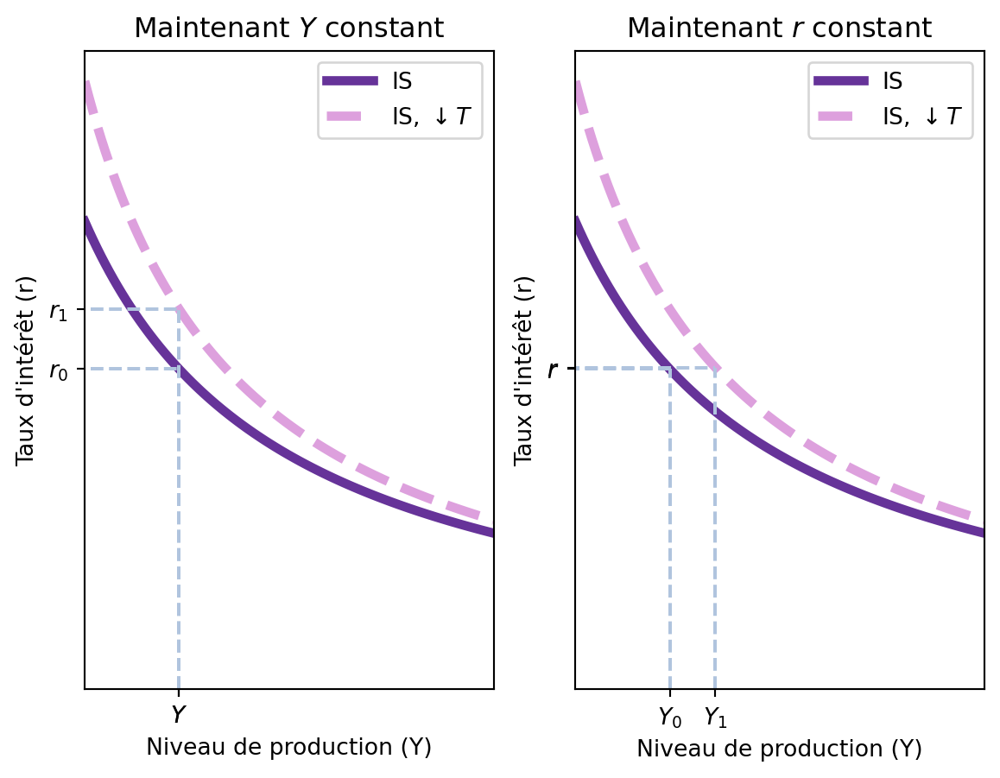
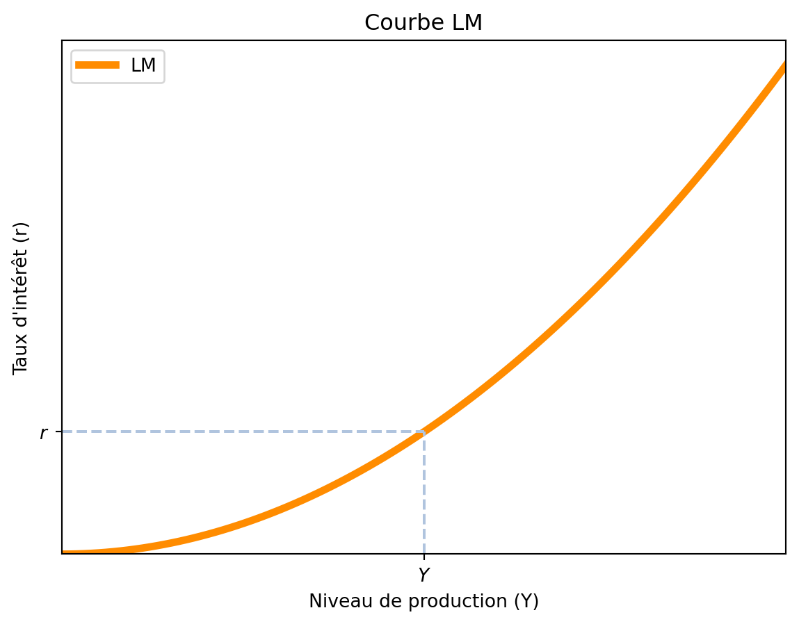
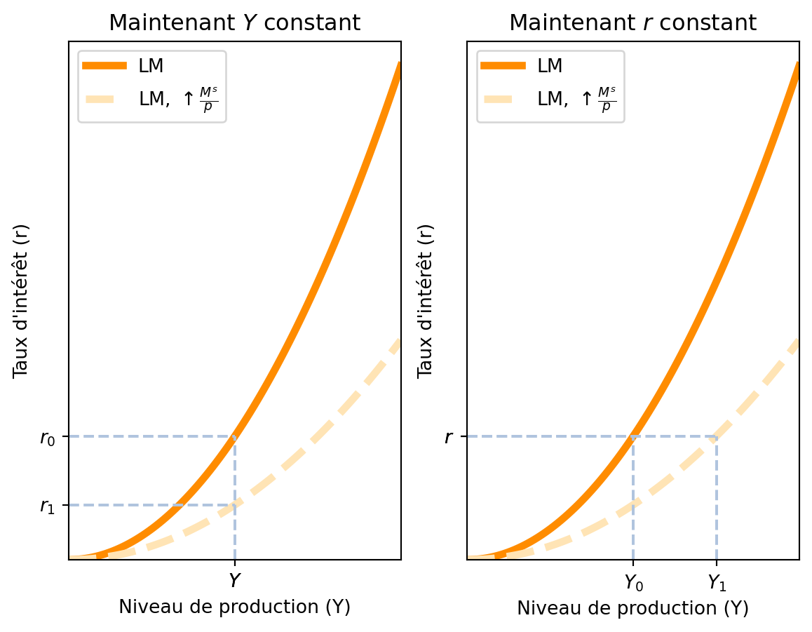
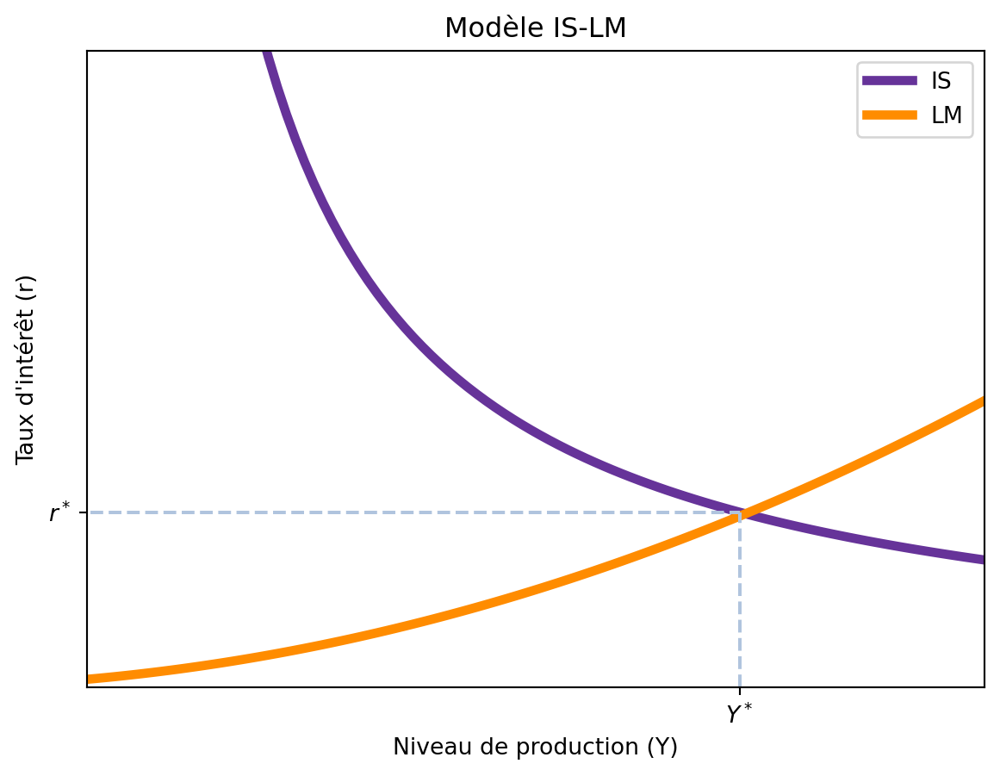

4 Le modèle IS-LM
Je soutiendrai que les postulats de la théorie classique ne sont applicables qu’à un cas particulier et non au cas général. […] De plus, les caractéristiques du cas particulier supposé par la théorie classique ne sont pas celles de la société économique dans laquelle nous vivons réellement, ce qui fait que son enseignement est trompeur et désastreux si nous tentons de l’appliquer aux faits de l’expérience.” – John Maynard Keynes
La crise de 1929 a été un tournant majeur dans l’histoire économique. Elle a mis en évidence les limites du modèle économique classique, qui supposait que les marchés s’ajustent rapidement pour atteindre l’équilibre. Le modèle IS-LM, développé par John Maynard Keynes, a été conçu pour expliquer les fluctuations économiques et le chômage involontaire, en mettant l’accent sur le rôle de la demande agrégée.
Le modèle IS-LM est un modèle macroéconomique qui relie le marché des biens et services (IS) et le marché de la monnaie (LM). Il a été développé par John Maynard Keynes dans son ouvrage “La Théorie générale de l’emploi, de l’intérêt et de la monnaie” publié en 1936. Il s’agit d’une extension du modèle classique qui intègre les idées keynésiennes sur la demande agrégée et le rôle de l’État dans l’économie et montre que les fluctuations économiques peuvent être causées par des variations de la demande agrégée, plutôt que par des variations de l’offre. Les principales différences entre le modèle IS-LM et le modèle classique sont:
- Le modèle IS-LM considère que les prix sont rigides à court terme, contrairement au modèle classique où les prix sont flexibles.
- Le modèle classique suppose que la production est déterminée par l’offre (et fixe), tandis que le modèle IS-LM met l’accent sur la demande agrégée comme moteur de l’économie.
- Le modèle IS-LM introduit le concept de chômage involontaire, contrairement au modèle classique qui considère que tout chômage est volontaire.
NoteNote
Le modèle IS-LM modifie l’hypothèse de base du modèle classique selon laquelle les prix sont flexibles. Il suppose que les prix sont rigides à court terme, ce qui permet aux variations de la demande agrégée d’affecter le niveau de production et d’emploi.
Une autre différence majeure est que la théorie keynésienne permet au gouvernement d’intervenir dans l’économie pour stabiliser les fluctuations économiques. Par exemple, le gouvernement peut augmenter les dépenses publiques ou réduire les impôts pour stimuler la demande agrégée, augmentant ainsi le niveau de production et réduisant le chômage. Les modifications de l’offre monétaire, telles que les variations de la masse monétaire, peuvent également influencer le niveau de production et d’emploi. Le modèle IS-LM est donc un outil puissant pour comprendre les fluctuations économiques et les politiques économiques qui peuvent être mises en œuvre pour stabiliser l’économie.
Les éléments clés du modèle IS-LM sont les mêmes que ceux du modèle classique, avec quelques modifications importantes, notamment le fait que les prix sont fixes à court terme.
- Lien entre épargne et investissement : Le modèle IS-LM repose sur l’idée que l’épargne et l’investissement sont égaux dans une économie fermée. L’équilibre sur le marché des biens et services est atteint lorsque la demande agrégée (consommation, investissement et dépenses publiques) est égale à l’offre agrégée (production). Ce équilibre implique que l’offre de fonds prêtables (épargne) est égale à la demande de fonds prêtables (investissement). L’équilibre sur le marché des biens et services est représenté par la courbe IS, qui montre la relation entre le niveau de production (PIB) et le taux d’intérêt.
- Offre et demande de monnaie : Le modèle IS-LM considère que l’offre de monnaie est déterminée par la banque centrale, tandis que la demande de monnaie dépend du niveau de production et du taux d’intérêt, de manière très similaire au modèle classique. L’équilibre dans le marché de la monnaie est représenté par la courbe LM, qui montre la relation entre le niveau de production (PIB) et le taux d’intérêt.
4.1 La courbe IS
La courbe IS représente l’équilibre dans le marché des biens et services, où la demande agrégée \((C(Y-T) + I(r) + \bar{G})\) est égale à l’offre agrégée \((Y)\). La courbe IS est dérivée de l’identité fondamentale de la comptabilité nationale, qui stipule que le produit intérieur brut (PIB) est égal à la somme de la consommation, de l’investissement et des dépenses publiques, moins les impôts.
\[ Y = C(Y-T) + I(r) + \bar{G} \implies S \equiv \overbrace{Y - C(Y-T) -T}^{S^P} + \overbrace{T - \bar{G}}^{S^G} = I(r) \tag{4.1}\]
Si, dans le modèle classique, la courbe IS ne servait qu’à détermine le taux d’intérêt d’équilibre, car la production dépendait du marché de travail; dans le modèle IS-LM, elle est utilisée pour déterminer le niveau de production d’équilibre \((Y)\) et le taux d’intérêt \((r)\) dans l’économie. Ainsi, quand le gouvernement modifie les dépenses publiques \((G)\), la demande agrégée change et, donc, le niveau de production d’équilibre \((Y)\) change aussi. Par exemple, pendant une situation de récession, il est possible d’imaginer que le capital \(K\) n’est pas utilisé à son plein potentiel, ce qui signifie que l’économie peut produire plus de biens et services. Dans ce cas, une augmentation des dépenses publiques \((G)\) peut stimuler la demande agrégée et augmenter le niveau de production d’équilibre \((Y)\).
NoteNote
Le modèle classique ne permet des ajustements du niveau de production \((Y)\) que par le biais de variations du capital \((K)\) ou du travail \((N)\). Une fois que le capital et le travail sont fixés, le niveau de production est déterminé par la fonction de production \(Y = F(K,N)\) et le niveau de prix \(p\) et taux d’intérêt \(r\) sont déterminés par l’équilibre sur le marché des biens et services par la suite.
Dans le modèle IS-LM, on détermine d’abord le niveau de production d’équilibre \((Y)\) et le taux d’intérêt \((r)\) en fonction de la demande agrégée et du marché de la monnaie. En connaissant \(Y\), il est possible de calculer le niveau d’emploi \((N)\) car le capital \((K)\) est supposé fixe à court terme. Enfin, le niveau de prix \((p)\) est fixe.
Comme pour le modèle classique, nous faisons l’hypothèse que la consommation \(C\) est une fonction croissante du revenu net d’impôts \(Y-T\) et qu’elle ne dépend pas du taux d’intérêt \(r\). Selon Keynes, le taux d’intérêt n’affecte pas la consommation, car les ménages ne modifient pas leur consommation en fonction du coût de l’emprunt. Il est possible de modifier cette hypothèse, mais pour simplifier, nous allons supposer que la consommation ne dépend pas du taux d’intérêt.
Enfin, pour expliquer les fluctuations économiques, Keynes a mis l’accent sur le rôle de l’investissement, qui est une fonction décroissante du taux d’intérêt \(r\). Dans certains cas, les investisseurs peuvent être pessimistes quant à l’avenir de l’économie et réduire leur demande de fonds prêtables, ce qui peut entraîner une baisse de l’investissement et, par conséquent, une baisse du niveau de production d’équilibre \((Y)\). Keynes a qualifié ces facteurs psychologiques et émotionnels d’“animal spirits”. En effet, il n’avait pas tort: l’investissement est beaucoup plus volatil comparé à la consommation.
| Année | \(\frac{I}{Y}\)(%) | \(\frac{C}{Y}\)(%) |
|---|---|---|
| 1955 | 17.1 | 63.5 |
| 1958 | 13.8 | 64.5 |
| 1973 | 16.1 | 62.6 |
| 1975 | 12.5 | 64.0 |
| 1979 | 16.0 | 62.7 |
NoteAnimal spirits
Outre la cause due à la spéculation, l’instabilité économique trouve une autre cause, inhérente celle-ci à la nature humaine, dans le fait qu’une grande partie de nos initiatives dans l’ordre du bien, de l’agréable ou de l’utile procèdent plus d’un optimisme spontané que d’une prévision mathématique. Lorsqu’il faut un long délai pour qu’elles produisent leur plein effet, nos décisions de faire quelque chose de positif doivent être considérées pour la plupart comme une manifestation de notre enthousiasme naturel (as the result of animal spirits) - comme l’effet d’un besoin instinctif d’agir plutôt que de ne rien faire -, et non comme le résultat d’une moyenne pondérée de bénéfices numériques multipliés par des probabilités numériques.
–John Maynard Keynes, Théorie générale de l’emploi, de l’intérêt et de la monnaie, Livre IV (L’incitation à investir), Chapitre XII (L’état de la prévision à long terme), partie VII, Paris, Payot, 1969, p. 175-176
4.1.1 La fonction de consommation
Keynes a proposé une modélisation spécifique du comportement de consommation des ménages, qui est un élément central pour analyser la demande agrégée. Cette fonction de consommation repose sur deux concepts principaux:
- Il existe un niveau de consommation incompressible \(c_0\) qui est le niveau minimal nécessaire pour la survie. Ce niveau de consommation représente les dépenses essentielles que les ménages doivent engager, indépendamment de leur niveau de revenu.
- La propension marginale à consommer (PMC), notée \(c_1\), qui est le pourcentage du revenu supplémentaire que les ménages choisissent de consommer, et qui est comprise entre 0 et 1. La PMC est un concept clé pour comprendre comment les variations du revenu affectent la consommation. Quand la PMC est élevée (proche de 1), cela signifie que les ménages consomment une grande partie de leur revenu supplémentaire, et, au contraire, si la PMC est faible (proche de 0), cela signifie que les ménages épargnent une grande partie de leur revenu supplémentaire.
Keynes a également souligné que le niveau de revenu de référence pour les décisions des ménages est le revenu net d’impôts. Ce lien est logique car, si le niveau d’imposition est très élevé, une augmentation du revenu reviendrait à une augmentation quasi nulle des ressources disponibles, et donc les ménages ne pourraient pas consommer davantage. Enfin, la représentation des impôts comme étant une constante est une simplification, car en réalité les impôts varient en fonction du revenu. Un exercice est dédié à cette forme alternative de la fonction de consommation.
La fonction de consommation Keynésienne peut être représentée mathématiquement par l’équation suivante :
\[ C = c_0 + c_1(Y-T) \tag{4.2}\]
où \(c_0 > 0\) est la consommation incompressible et \(c_1 \in (0,1)\) est la propension marginale à consommer.
4.1.2 L’effet multiplicateur simple
L’effet multiplicateur est un concept clé de la théorie keynésienne qui explique comment les variations de la demande agrégée peuvent avoir des effets amplifiés sur le niveau de production d’équilibre \((Y)\) dans une économie. Ainsi, une augmentation des dépenses publiques \((G)\) ou une réduction des impôts \((T)\) peut entraîner une augmentation plus que proportionnelle du niveau de production d’équilibre \((Y)\), aidant à stimuler l’économie à court terme.
NoteNote
Normalement, l’effet multiplicateur est introduit avec l’analyse de la croix keynésienne, qui est une représentation graphique de l’interaction entre la demande agrégée et le niveau de production d’équilibre. Nous allons cependant l’introduire mathématiquement, car il est plus simple de le comprendre ainsi.
L’idée de l’effet multiplicateur est que les variations de la demande agrégée ont un effet en chaîne sur le niveau de production d’équilibre \((Y)\). Dans le modèle IS-LM, l’effet multiplicateur simple est lié à la propension marginale à consommer \((c_1)\).1
L’effet multiplicateur simple peut être compris comme suit: lorsqu’il y a une augmentation des dépenses publiques \((G)\) ou une réduction des impôts \((T)\), cela entraîne une augmentation du revenu disponible des ménages, ce qui à son tour stimule la consommation. Cette augmentation de la consommation génère une nouvelle augmentation de la production, ce qui crée un effet en chaîne. L’effet multiplicateur simple est défini comme le rapport entre la variation du niveau de production d’équilibre \((Y)\) et la variation des dépenses publiques \((G)\) ou des impôts \((T)\).
Mathématiquement, l’effet multiplicateur simple est donné par les équations suivantes que nous calculerons plus en détail ci-dessous. En primer lieu, le multiplicateur des dépenses publiques est:
\[ \frac{\mathrm{d} Y}{\mathrm{d} G} \tag{4.3}\]
et le multiplicateur des impôts est:
\[ \frac{\mathrm{d} Y}{\mathrm{d} T} \tag{4.4}\]
Ces éxpressions représentent la variation du niveau de production d’équilibre \((\mathrm{d} Y)\) en réponse à une variation des dépenses publiques \((\mathrm{d} G)\) ou des impôts \((\mathrm{d} T)\). La notation \(\mathrm{d}\) indique une variation infinitésimale, ce qui est courant en analyse économique pour représenter des changements très petits, mais vous pouvez le voir comme une variation finie si vous préférez.
Warning 4.1: Important
Nous dissons, pour simplifier, que l’effet multiplicateur simple indique qu’une variation des dépenses publiques \((G)\) ou des impôts \((T)\) augmente le revenu d’équilibre \((Y)\) d’une certaine quantité. Cependant, il serait plus correct de dire que la courbe IS se déplace d’une certaine quantité, car le multiplicateur total dépend aussi de la courbe IS.
4.1.2.1 Multiplicateur des dépenses publiques
Imaginons que le gouvernement augmente les dépenses publiques de \(\Delta G\). On peut se demander comment cette augmentation des dépenses publiques affecte le niveau de production d’équilibre \((Y)\).
Pour répondre à cette question, nous allons suivre les étapes suivantes:
- Changement initial des dépenses : L’augmentation initiale des dépenses publiques est \(\Delta G\).
- Augmentation du PIB : Cette augmentation des dépenses publiques entraîne une augmentation immédiate du PIB de \(\Delta G\).
- Augmentation du revenu disponible : L’augmentation du PIB implique que le revenu disponible des ménages augmente de \(\Delta G\), ce qui à son tour augmente leur consommation de \(c_1 \Delta G\) (où \(c_1\) est la propension marginale à consommer).
- Changement de la consommation : L’augmentation de la consommation entraîne une nouvelle augmentation du PIB de \(c_1 \Delta G\).
- Nouvelle augmentation du revenu disponible : Cette nouvelle augmentation du PIB augmente à nouveau le revenu disponible des ménages, ce qui entraîne une nouvelle augmentation de la consommation de \(c_1^2 \Delta G\).
- Effet en chaîne : Ce processus se répète indéfiniment, créant un effet en chaîne.
Mis ensemble, l’effet total de l’augmentation des dépenses publiques de \(\Delta G\) sur le PIB est donné par la série infinie suivante:
\[ \Delta Y = \Delta G + c_1 \Delta G + c_1^2 \Delta G + c_1^3 \Delta G + \ldots \]
En factorisant \(\Delta G\), on obtient:
\[ \Delta Y = \Delta G (1 + c_1 + c_1^2 + c_1^3 + \ldots) \]
La somme \(1 + c_1 + c_1^2 + c_1^3 + \ldots\) est une série géométrique infinie qui converge vers \(\frac{1}{1-c_1}\), à condition que \(c_1 < 1\). Ainsi, l’effet total de l’augmentation des dépenses publiques sur le PIB est donné par:
\[ \Delta Y = \Delta G \cdot \frac{1}{1-c_1} \]
Et le multiplicateur des dépenses publiques est:
\[ \frac{\mathrm{d} Y}{\mathrm{d} G} = \frac{\Delta Y}{\Delta G} = \frac{1}{1-c_1} > 1 \tag{4.5}\]
Cette équation montre que le multiplicateur des dépenses publiques est toujours supérieur à 1, car \(1 - c_1 \in (0, 1)\), ce qui signifie qu’une augmentation des dépenses publiques entraîne une augmentation plus que proportionnelle du PIB.
NoteExemple
Si l’on suppose une propension marginale à consommer \(c_1 = 0.6\), le multiplicateur des dépenses publiques est égal à
\[ \frac{\Delta Y}{\Delta G} = \frac{1}{1-0.6} = 2.5 \]
Ceci signifie qu’une augmentation de \(G\) de 1 euro augmente le revenu (PIB) d’équilibre de 2.5 euros (voir la note Warning 4.1).
ImportantLe multiplicateur des dépenses publiques calculé de manière alternative
Il est possible de calculer le multiplicateur des dépenses publiques de manière alternative, en prennant la dérivée totale de l’équation d’équilibre du marché des biens et services par rapport à \(G\) et \(Y\):
\[ \frac{\partial Y}{\partial Y} \mathrm{d}Y = c_1 \frac{\partial Y}{\partial Y} \mathrm{d}Y + \frac{\partial G}{\partial G} \mathrm{d}G \]
Où \(\frac{\partial G}{\partial G} = 1\) et \(\frac{\partial Y}{\partial Y} = 1\). En simplifiant, nous avons:
\[ \mathrm{d}Y = c_1 \mathrm{d}Y + \mathrm{d}G \]
En isolant \(\frac{\mathrm{d}Y}{\mathrm{d}G}\), nous obtenons:
\[ \frac{\mathrm{d}Y}{\mathrm{d}G} = \frac{1}{1-c_1} > 1 \]
4.1.2.2 Multiplicateur des impôts
De manière similaire au multiplicateur des dépenses publiques, l’effet multiplicateur des impôts montre qu’une variation des impôts \((T)\) affecte le niveau de production d’équilibre \((Y)\). Si l’on reduit les impôts de \(\Delta T\), cela augmente le revenu disponible des ménages \((Y-T)\), ce qui stimule la consommation de \(c_1 (Y-T)\) et, par conséquent, le PIB.
Ainsi, une réduction des impôts de \(\Delta T\) entraîne une augmentation initiale du PIB de \(c_1 \Delta T\). Ensuite, cette augmentation du PIB augmente le revenu disponible des ménages de \(c_1 \Delta T\), ce qui entraîne une nouvelle augmentation de la consommation de \(c_1^2 \Delta T\). Si on continue ce processus, on obtient une série infinie similaire à celle du multiplicateur des dépenses publiques:
\[ \Delta Y = - c_1 \Delta T - c_1^2 \Delta T - c_1^3 \Delta T - \ldots \]
Le signe négatif vient du fait que nous parlons d’une réduction des impôts, et donc \(\Delta T\) est négatif. En factorisant \(- \Delta T\), on obtient:
\[ \Delta Y = - \Delta T (c_1 + c_1^2 + c_1^3 + \ldots) \]
La somme \(c_1 + c_1^2 + c_1^3 + \ldots\) est une série géométrique infinie qui converge vers \(\frac{c_1}{1-c_1}\), à condition que \(c_1 < 1\).
Ainsi, l’effet total de la réduction des impôts sur le PIB est donné par:
\[ \Delta Y = - \Delta T \cdot \frac{c_1}{1-c_1} \]
Et le multiplicateur des impôts est:
\[ \frac{\mathrm{d} Y}{\mathrm{d} T} = \frac{\Delta Y}{\Delta T} = - \frac{c_1}{1-c_1} < 0 \tag{4.6}\]
Deux remarques importantes sont à faire à propos de cette équation:
- Le multiplicateur des impôts est négatif, ce qui signifie qu’une augmentation des impôts entraîne une diminution du PIB et qu’une réduction des impôts entraîne une augmentation du PIB.
- Le multiplicateur des impôts est toujours inférieur au multiplicateur des dépenses publiques, car \(c_1 < 1\).
NoteExemple
Si l’on suppose une propension marginale à consommer \(c_1 = 0.6\), le multiplicateur des impôts est:
\[ \frac{\Delta Y}{\Delta T} = - \frac{0.6}{1-0.6} = - 1.5 \]
Cela signifie qu’une augmentation des impôts de 1 euro réduit le revenu (PIB) d’équilibre de 1.5 euros (voir la note Warning 4.1).
ImportantLe multiplicateur des impôts calculé de manière alternative
Il est possible de calculer le multiplicateur des impôts de manière alternative, en prenant la dérivée totale de l’équation d’équilibre du marché des biens et services par rapport à \(T\) et \(Y\):
\[ \frac{\partial Y}{\partial Y} \mathrm{d}Y = c_1 \frac{\partial Y}{\partial Y} \mathrm{d}Y - c_1 \frac{\partial T}{\partial T} \mathrm{d}T \]
Où \(\frac{\partial T}{\partial T} = 1\) et \(\frac{\partial Y}{\partial Y} = 1\).
En simplifiant, nous avons:
\[ \mathrm{d}Y = c_1 \mathrm{d}Y - c_1 \mathrm{d}T \implies (1-c_1) \mathrm{d}Y = - c_1 \mathrm{d}T \]
En isolant \(\frac{\mathrm{d}Y}{\mathrm{d}T}\), nous obtenons:
\[ \frac{\mathrm{d}Y}{\mathrm{d}T} = - \frac{c_1}{1-c_1} < 0 \]
NoteCas d’étude: réduction des impôts de Kennedy et Bush
L’expérience Kennedy (1961-1965)
Lorsque John F. Kennedy est devenu président des États-Unis en 1961, il s’entoura d’économistes de renom comme Walter Heller (président du Council of Economic Advisers), James Tobin (prix Nobel d’économie) et Paul Samuelson (conseiller informel). Ces économistes, influencés par la théorie keynésienne, proposèrent une politique fiscale expansionniste pour stimuler la croissance économique.
L’une des mesures phares fut la Revenue Act of 1964, adoptée après l’assassinat de Kennedy par son successeur Lyndon Johnson. Cette loi réduisit significativement les taux d’imposition: - Le taux marginal supérieur passa de 91% à 70% - Le taux d’imposition des entreprises fut réduit de 52% à 48%
Dans son discours du 14 décembre 1962 au “Economic Club”, Kennedy déclara: > Il est paradoxal qu’aujourd’hui les taux d’imposition soient trop élevés et les revenus fiscaux trop faibles, et que le moyen le plus sûr d’augmenter les revenus à long terme soit de réduire les taux maintenant. […] > et la raison est que seul le plein emploi peut balancer le budget, et la réductions des impôts peut nous y conduire. > L’objectif de la réduction des impôts n’est pas d’augmenter le déficit budgétaire, mais d’achever une plus prospère et croissante économie qui pourra nous permettre de réduire le déficit budgétaire.
Résultats économiques: - Croissance du PIB réel : 5,8% en 1964 et 6,5% en 1965 - Taux de chômage : 5,6% (1963) → 5,2% (1964) → 4,5% (1965) - Les recettes fiscales augmentèrent malgré la baisse des taux
L’expérience Bush (2001-2003)
George W. Bush fit campagne en 2000 sur un programme de réductions d’impôts substantielles. Deux lois majeures furent adoptées : - Economic Growth and Tax Relief Reconciliation Act of 2001 - Jobs and Growth Tax Relief Reconciliation Act of 2003
En 2002, Bush expliqua la logique keynésienne derrière cette mesure : > Je crois que quand on permet aux gens de garder plus de leur argent, ils le dépensent. > Et quand ils dépensent, cela augmente la demande de biens et services. > Et quand la demande de biens et services augmente, quelqu’un va produire ce bien ou service. > Et quand quelqu’un produit ce bien ou service, cela signifie que quelqu’un est plus susceptible de trouver un emploi.
Mesures adoptées: - Réduction des taux marginaux d’imposition sur le revenu - Réduction de l’impôt sur les dividendes et les plus-values - Augmentation des déductions pour amortissement des investissements
4.1.3 La courbe IS sur le plan \((Y-r)\)
La courbe IS est tracée sur le plan \((Y-r)\), où \(Y\) est le niveau de production d’équilibre, tracé sur l’axe des abscisses et \(r\) est le taux d’intérêt, tracé sur l’axe des ordonnées.
Pour rappeler, la courbe IS est dérivée de l’identité fondamentale de la comptabilité nationale, qui stipule que le produit intérieur brut (PIB) est égal à la somme de la consommation, de l’investissement et des dépenses publiques, moins les impôts. La courbe IS montre, donc, toutes les combinaisons de \(Y\) et \(r\) pour lesquelles l’offre agrégée est égale à la demande agrégée. Autrement dit, la courbe IS représente toute combinaison de niveau de production d’équilibre \((Y)\) et de taux d’intérêt \((r)\) pour laquelle l’économie est en équilibre sur le marché des biens et services.
Sur le plan \((Y-r)\), la courbe IS est décroissante, ce qui signifie que lorsque le taux d’intérêt augmente, le niveau de production d’équilibre diminue. La raison de cette relation décroissante est que le taux d’intérêt \((r)\) affecte l’investissement \((I)\), qui est une composante clé de la demande agrégée. Quand le taux d’intérêt augmente, le coût de l’emprunt pour financer des projets d’investissement augmente, ce qui réduit l’investissement. Comme \(I(r)\) diminue, la demande agrégée diminue, ce qui entraîne une diminution du niveau de production d’équilibre \((Y)\).
Mathématiquement, la courbe IS est dérivée de l’équation d’équilibre du marché des biens et services.
\[ Y = c_0 + c_1(Y-T) + I(r) + \bar{G} \]
Nous pouvons vérifier que, lors que \(Y\) augmente, \(r\) diminue, c’est-à-dire, que la courbe IS est décroissante. Pour cela, nous allons calculer la dérivée totale de l’équation d’équilibre du marché des biens et services par rapport à \(Y\) et \(r\):
\[ \frac{\partial Y}{\partial Y} \mathrm{d}Y = c_1 \frac{\partial Y}{\partial Y} \mathrm{d}Y + \frac{\partial I(r)}{\partial r} \mathrm{d}r \]
où \(\frac{\partial I(r)}{\partial r}\) est la dérivée de la fonction d’investissement par rapport au taux d’intérêt, qui est négative car l’investissement diminue lorsque le taux d’intérêt augmente. En simplifiant \((\frac{\partial Y}{\partial Y} = 1)\), nous avons:
\[ \mathrm{d}Y = c_1 \mathrm{d}Y + I^\prime \mathrm{d}r \]
Et en isolant \(\frac{\mathrm{d}r}{\mathrm{d}Y}\), nous obtenons:
\[ \frac{\mathrm{d}r}{\mathrm{d}Y} = \frac{1-c_1}{I^\prime} < 0 \]
car \(I^\prime < 0\) (la fonction d’investissement est décroissante) et \(c_1 \in (0,1)\).
NoteExemple
Si nous supposons que la fonction d’investissement est \(I(r) = \frac{1}{r}\), la consommation est \(C(Y-T) = c_0 + c_1(Y-T)\) avec \(c_0 = 10\) et \(c_1 = 0.6\), et les dépenses publiques sont \(\bar{G} = 8\), nous pouvons écrire l’équation d’équilibre du marché des biens et services comme suit:
\[ Y = 10 + 0.6(Y-3) + \frac{1}{r} + 8 \]
Ensuite, nous pouvons réarranger cette équation pour exprimer \(r\) en fonction de \(Y\) calculer la pente de la courbe IS:
\[ Y = 16.2 + 0.6 Y + \frac{1}{r} \implies 0.4 Y = 16.2 + \frac{1}{r} \implies r = \frac{1}{0.4Y - 16.2} = \frac{5}{2Y - 81} \]
et la dérivée de \(r\) par rapport à \(Y\) est:
\[ \frac{\mathrm{d}r}{\mathrm{d}Y} = \frac{-10}{(2Y - 81)^2} < 0 \]
4.1.3.1 Déplacements de la courbe IS
La courbe IS montre l’ensemble des combinaisons de niveau de production d’équilibre \((Y)\) et de taux d’intérêt \((r)\) pour lesquelles l’offre agrégée est égale à la demande agrégée. Pour tracer la courbe IS, nous devons choisir des valeurs pour les variables exogènes, telles que les dépenses publiques \((G)\) et les impôts \((T)\). Comment la courbe IS change-t-elle lorsque ces variables exogènes varient?
En partant de l’équation d’équilibre du marché des biens et services, nous avons:
\[ Y = C(Y-T) + I(r) + \bar{G} \]
4.1.3.1.1 Augmentation des dépenses publiques
Imaginons que les depenses publiques augmentent. Le terme \(\bar{G}\) augmente, et donc l’équation n’est plus vérifiée car la partie droite augmente \((Y = C(Y-T) + I(r) + \bar{G})\) et la partie gauche \((Y)\) reste constante. Pour penser comment la courbe IS doit changer, nous pouvons:
- Fixer un niveau de production d’équilibre \((Y)\) et analyser comment le taux d’intérêt \((r)\) doit changer pour rétablir l’équilibre.
- Fixer un taux d’intérêt \((r)\) et analyser comment le niveau de production d’équilibre \((Y)\) doit changer pour rétablir l’équilibre.
Si nous fixons un niveau de production d’équilibre \((Y)\), l’augmentation des dépenses publiques \((\bar{G})\) augmente la partie droite de l’équation, et donc, pour rétablir l’équilibre, cette même partie doit diminuer. Comme nous avons fixé \(Y\) et \(T\) est exogène la seule possibilité est que la partie \(I(r)\) diminue. En rappelant que \(I(r)\) est une fonction décroissante du taux d’intérêt \((r)\), cela signifie que le taux d’intérêt doit augmenter pour rétablir l’équilibre. Ainsi, si les dépenses publiques \((G)\) augmentent, la courbe IS se déplace vers le haut, c’est-à-dire que pour chaque niveau de production \((Y)\), le taux d’intérêt \((r)\) augmente.
De manière équivalente, si nous fixons le taux d’intérêt \((r)\) et analysons comment le niveau de production d’équilibre \((Y)\) doit changer pour rétablir l’équilibre, nous avons que l’augmentation des dépenses publiques \((\bar{G})\) augmente la partie droite de l’équation, et donc, pour rétablir l’équilibre, la partie gauche doit augmenter. L’augmentation de \(Y\) entraîne une augmentation de la consommation \((C(Y-T))\) car \(Y\) apparaît dans la fonction de consommation, mais il est possible de calculer exactement l’augmentation nécessaire. Enfin, pour chaque niveau de taux d’intérêt \((r)\), le niveau de production d’équilibre \((Y)\) augmente, et donc la courbe IS se déplace vers la droite.
La manière mathématique de calculer le premier déplacement de la courbe IS est de calculer les dérivées partielles de l’équation d’équilibre du marché des biens et services par rapport à \(G\) et \(r\) pour trouver \(\frac{\mathrm{d}r}{\mathrm{d}G}\).
\[ 0 = \frac{\partial I(r)}{\partial r} \mathrm{d}r + \frac{\partial G}{\partial G} \mathrm{d}G \]
En isolant \(\frac{\mathrm{d}r}{\mathrm{d}G}\), nous avons:
\[ \frac{\mathrm{d}r}{\mathrm{d}G} = - \frac{\partial I(r)}{\partial r} \cdot \frac{1}{\frac{\partial Y}{\partial Y}} = - \frac{\partial I(r)}{\partial r} > 0 \]
Cela indique que, pour un niveau de production \((Y)\) donné, si les dépenses publiques \((G)\) augmentent, le taux d’intérêt \((r)\) doit augmenter pour rétablir l’équilibre, déplaçant la courbe IS vers le haut.
Par rapport à la deuxième possibilité, si nous fixons le taux d’intérêt \((r)\) et analysons comment le niveau de production d’équilibre \((Y)\) doit changer pour rétablir l’équilibre, nous devons calculer les dérivées partielles de l’équation d’équilibre du marché des biens et services par rapport à \(G\) et \(Y\) pour trouver \(\frac{\mathrm{d}Y}{\mathrm{d}G}\): comment \(Y\) change quand \(G\) change pour un niveau de taux d’intérêt \((r)\) fixe tel que l’équation d’équilibre est vérifiée.
\[ \frac{\partial Y}{\partial Y} \mathrm{d}Y = c_1 \frac{\partial Y}{\partial Y} \mathrm{d}Y + \frac{\partial G}{\partial G} \mathrm{d}G \]
En isolant \(\frac{\mathrm{d}Y}{\mathrm{d}G}\), nous avons:
\[ \frac{\mathrm{d}Y}{\mathrm{d}G} = \frac{1}{1-c_1} > 0 \]
Cette équation indique que, pour un niveau de taux d’intérêt \((r)\) donné, si les dépenses publiques \((G)\) augmentent, le niveau de production d’équilibre \((Y)\) doit augmenter pour rétablir l’équilibre, déplaçant la courbe IS vers la droite.
ImportantNote
La resultat quand nous utilisons la deuxième possibilité est le multiplicateur des dépenses publiques, qui est défini comme le rapport entre la variation du niveau de production d’équilibre \((Y)\) et la variation des dépenses publiques \((G)\).
En effet, lors du calcul du multiplicateur on se demandait comment le niveau de production d’équilibre \((Y)\) change quand les dépenses publiques \((G)\) changent, gardant le taux d’intérêt \((r)\) constant de manière implicite.

ImportantVérification
Imaginons que la courbe IS initiale est donnée par la fonction \(Y = 10 + 0.6(Y-3) + \frac{1}{r} + 8\) et que \(G\) augmente de 10, passant de \(\bar{G} = 8\) à \(\bar{G} = 18\). Nous pouvons calculer le déplacement horizontal de la courbe IS pour n’importe quel niveau de taux d’intérêt \(r\), prennons par exemple \(r = 0.4\). Nous avons: \[ Y = 10 + 0.6(Y-3) + \frac{1}{0.4} + 8 \]
Le niveau de production d’équilibre est \(Y = 46.75\).
Quand \(G\) augmente de 10, nous avons: \[ Y = 10 + 0.6(Y-3) + \frac{1}{0.4} + 18 \implies Y = 71.75 \]
L’augmentation de \(Y\) est de \(25\), ce qui correspond à l’augmentation de \(G\) multipliée par le multiplicateur des dépenses publiques, qui est \(\frac{1}{1-c_1} = \frac{1}{1-0.6} = 2.5\). Dans ce cas, l’augmentation de \(Y\) est de \(10 \cdot 2.5 = 25\), ce qui correspond à l’augmentation de \(G\) multipliée par le multiplicateur des dépenses publiques.
Nous obtenon le même résultat pour toute valeur de \(r\). Par exemple, si nous prenons \(r = 1\), nous avons: \[ Y = 10 + 0.6(Y-3) + \frac{1}{1} + 8 \implies Y = 43 \]
Et, quand \(G\) augmente de 10, nous avons:
\[ Y = 10 + 0.6(Y-3) + \frac{1}{1} + 18 \implies Y = 68 \]
La variation de \(Y\) est, à nouveau, de \(25\), ce qui correspond à l’augmentation de \(G\) multipliée par le multiplicateur des dépenses publiques.
Mathématiquement, le résultat est toujours le même, car si \(Y_0\) est le niveau de production d’équilibre initial, \(Y_1\) le niveau de production d’équilibre après l’augmentation de \(G\), et \(G_0\) et \(G_1\) les niveaux de dépenses publiques avant et après l’augmentation, nous avons:
\[ \begin{aligned} Y_1 &= c_0 + c_1(Y_1-T) + I(r) + G_1 \\ Y_0 &= c_0 + c_1(Y_0-T) + I(r) + G_0 \\ \\ Y_1 - Y_0 &= c_1(Y_1 - Y_0) + (G_1 - G_0) \\ \Delta Y &= c_1(\Delta Y) + \Delta G \\ \Delta Y &= \frac{\Delta G}{1 - c_1} \\ \Delta Y &= \frac{1}{1 - c_1} \Delta G \end{aligned} \]
4.1.3.1.2 Réduction des impôts
De manière similaire, si les impôts diminuent, la courbe IS se déplace aussi. Pour le voir, admettons que nous fixons un taux d’intérêt \(r\) et analysons comment la courbe doit changer pour garder l’identité \(Y = C(Y-T) + I(r) + \bar{G}.\) Si les impôts diminuent, cela veut dire que la consommation augmente, car \(C(Y-T) = c_0 + c_1(Y-T)\). Ainsi, suit au changement nous avons: \(Y = \uparrow C(Y-\downarrow T) + I(r) + \bar{G}.\) Pour rétablir l’égalité, le côté gauche doit augmenter (ce qui va provoquer un effet en chaîne, car l’augmentation à gauche induit une nouvelle augmentation à droite.) \(\uparrow Y = \uparrow C(\uparrow Y-\downarrow T) + I(r) + \bar{G}.\) Par conséquent, quand les impôts diminuent, la courbe IS se déplace vers la droite. Ce résultat a du sens du point de vue économique: avec moins d’impôts, la consommation est plus forte et, donc, pour n’importe quel taux d’intérêt, le PIB doit être aussi plus élevé.
De manière alternative, nous pouvons fixer \(Y\) et analyser comment \(r\) doit s’ajuster pour rétablir l’équilibre. \(Y = \uparrow C(Y-\downarrow T) + I(r) + \bar{G}.\) Comme la partie droite vient d’augmenter, il faut que \(I(r)\) diminue et, pour cela, \(r\) doit augmenter. \(Y = \uparrow C(Y-\downarrow T) + \downarrow I(\uparrow r) + \bar{G}.\) Conséquence: la courbe IS se déplace vers le haut.
Mathématiquement, nous pouvons calculer le multiplicateur pour étudier l’effet. Dans le premier cas où nous fixons \(Y\), nous aurons que:
\[ 0 = - c_1 \frac{\partial T}{\partial T} \mathrm{d}T + \frac{\partial I(r)}{\partial r} \mathrm{d}r \]
En isolant \(\frac{\mathrm{d}r}{\mathrm{d}T}\), nous obtenons:
\[ \frac{\mathrm{d}r}{\mathrm{d}T} = \frac{c_1}{I^\prime (r)} < 0 \]
où \(I^\prime (r) \equiv \frac{\partial I(r)}{\partial r} < 0\) est la dérivée de la fonction d’investissement par rapport au taux d’intérêt, qui est négative car l’investissement diminue lorsque le taux d’intérêt augmente. Ainsi, la relation entre la variation des impôts \((T)\) et la variation du taux d’intérêt \((r)\) est négative, ce qui signifie que lorsque les impôts diminuent, le taux d’intérêt augmente pour rétablir l’équilibre; et vice versa, lorsque les impôts augmentent, le taux d’intérêt diminue pour rétablir l’équilibre.
Si, par contre, nous fixons \(r\) et analysons comment \(Y\) doit changer pour rétablir l’équilibre, nous avons:
\[ \frac{\partial Y}{\partial Y} \mathrm{d}Y = c_1 \frac{\partial Y}{\partial Y} \mathrm{d}Y - c_1 \frac{\partial T}{\partial T} \mathrm{d}T \]
En isolant \(\frac{\mathrm{d}Y}{\mathrm{d}T}\), nous avons:
\[ \frac{\mathrm{d}Y}{\mathrm{d}T} = - \frac{c_1}{1-c_1} < 0 \]
Cela indique que, pour un niveau de taux d’intérêt \((r)\) donné, si les impôts \((T)\) diminuent, le niveau de production d’équilibre \((Y)\) doit augmenter pour rétablir l’équilibre, déplaçant la courbe IS vers la droite. En plus, de nouveau, nous retrouvons le multiplicateur des impôts, qui est défini comme le rapport entre la variation du niveau de production d’équilibre \((Y)\) et la variation des impôts \((T)\), pour une valeur de taux d’intérêt \((r)\) fixe.

ImportantVérification
Imaginons que la courbe IS initiale est donnée par la fonction \(Y = 10 + 0.6(Y-3) + \frac{1}{r} + 8\) et que \(T\) diminue de 1, passant de \(T = 3\) à \(T = 2\). Nous pouvons calculer le déplacement horizontal de la courbe IS pour n’importe quel niveau de taux d’intérêt \(r\), prenons par exemple \(r = 0.4\).
Nous avons:
\[ Y = 10 + 0.6(Y-3) + \frac{1}{0.4} + 8 \]
Le niveau de production d’équilibre est \(Y = 46.75\). Quand \(T\) diminue de 1, nous avons:
\[ Y = 10 + 0.6(Y-2) + \frac{1}{0.4} + 8 \implies Y = 48.25 \]
La variation de \(Y\) est de \(-1.5\), ce qui correspond à la diminution de \(T\) multipliée par le multiplicateur des impôts, qui est \(-\frac{c_1}{1-c_1} = -\frac{0.6}{1-0.6} = -1.5\).
Utilisant la même procédure qu’auparavant, nous pouvons vérifier que le résultat est toujours le même pour toute valeur de \(r\).
4.1.3.2 Pourquoi le multiplicateur des impôts est-il inférieur au multiplicateur des dépenses publiques?
Mathématiquement, le multiplicateur des impôts est inférieur au multiplicateur des dépenses publiques car \(\frac{c_1}{1-c_1} < \frac{1}{1-c_1}\).
D’un point de vue économique, cela signifie que l’effet d’une variation des impôts sur le PIB est moins important que l’effet d’une variation des dépenses publiques. Ceci s’explique par le fait que les dépenses publiques ont un effet direct sur la demande agrégée, tandis que les impôts ont un effet indirect en modifiant le revenu disponible des ménages. En effet, quand le gouvernement augmente les dépenses publiques de \(\Delta G\), cela augmente directement la demande agrégée de \(\Delta G\): il est nécessaire de construire ou acheter ces biens et services qui n’existaient pas auparavant. De plus, cette augmentation de la demande agrégée entraîne une augmentation du PIB, qui à son tour augmente le revenu disponible des ménages et stimule la consommation.
Cependant, quand le gouvernement diminue les impôts de \(\Delta T\), cela augmente indirectement la demande agrégée de \(c_1 \Delta T\): les ménages ont plus d’argent à dépenser, ce qui augmente leur consommation. De manière critique, dans ce cas, seul une partie de cette augmentation de la consommation se traduira par une augmentation du PIB car une partie de l’argent supplémentaire sera épargnée.
En résumé, la différence entre les multiplicateurs des dépenses publiques et des impôts peut être expliquée par deux facteurs principaux :
- Effet direct vs indirect : Une augmentation des dépenses publiques \((\Delta G)\) a un effet direct sur le PIB. Chaque euro dépensé par le gouvernement augmente directement le PIB d’un euro. En revanche, une réduction d’impôts \((-\Delta T)\) n’a qu’un effet indirect. Elle augmente le revenu disponible, mais seule une fraction de ce revenu supplémentaire, déterminée par \(c_1\) (la propension marginale à consommer), est effectivement dépensée.
- Processus multiplicateur : Pour \(\Delta G\), le processus multiplicateur commence immédiatement avec l’intégralité de la dépense. Tout l’argent injecté entre directement dans le circuit économique. Pour \(-\Delta T\), seule une partie \((c_1)\) de la réduction d’impôts entre dans le circuit économique au début du processus multiplicateur.
La différence entre les deux multiplicateurs est donc due à la nature directe des dépenses publiques par rapport à la nature indirecte des réductions d’impôts et elle a des implications importantes pour la politique économique.
- Efficacité: À court terme, une augmentation des dépenses publiques est plus efficace pour stimuler l’économie qu’une réduction d’impôts du même montant.
- Rapidité: L’effet des dépenses publiques se fait sentir plus rapidement car il n’y a pas de délai lié à la décision des ménages de dépenser ou d’épargner.
- Ciblage: Les dépenses publiques peuvent être plus facilement ciblées vers des secteurs ou des projets spécifiques, tandis que l’effet d’une réduction d’impôts dépend des décisions de consommation des ménages.
- Considérations de long terme: Bien que les dépenses publiques aient un effet multiplicateur plus important à court terme, les réductions d’impôts peuvent avoir des effets bénéfiques à long terme sur l’incitation au travail et à l’investissement.
ImportantCas d’étude: Les multiplicateurs dans le débat économique (Mankiw, p.322)
Lorsque Barack Obama est devenu président en janvier 2009, l’économie américaine était en récession. Son administration proposa un important plan de relance d’environ 800 milliards de dollars, soit environ 5% du PIB annuel, pour stimuler la demande globale.
Le plan comprenait des réductions d’impôts et une augmentation des transferts, mais surtout une augmentation des achats de biens et services par le gouvernement. Les économistes ont débattu des mérites du plan: Les partisans du plan Obama arguaient que l’augmentation des dépenses était plus efficace que la réduction des impôts, car selon la théorie keynésienne standard, le multiplicateur des dépenses publiques est supérieur au multiplicateur fiscal. Selon les économistes de l’administration Obama, le multiplicateur des dépenses publiques était de 1,57, tandis que le multiplicateur fiscal n’était que de 0,99. D’autres économistes soutenaient que, malgré les prédictions des modèles keynésiens conventionnels, les stimuli fiscaux basés sur les dépenses ne sont pas aussi efficaces que les initiatives basées sur les impôts. Certains économistes, comme Gary Becker, s’inquiétaient que l’utilisation des dépenses d’infrastructure pour promouvoir l’emploi puisse entrer en conflit avec l’objectif d’obtenir les infrastructures les plus nécessaires.
Des nouvelles dépenses d’infrastructure dans des régions en déclin économique comme Detroit pourrait avoir un effet stimulant important parce que ces projets de construction peuvent utiliser des travailleurs qui, aujourd’hui sont au chômage. Toutefois, beaucoup de ces zones sont en déclin parce qu’elles produisaient des biens et services qui ne sont pas très demandés et qui ne le seront pas à l’avenir. Par conséquent, la valeur ajoutée globale en améliorant leurs routes et autres infrastructures sera probablement beaucoup moins importante que si la nouvelle infrastructure était située dans des régions avec une forte croissance qui pourraient avoir relativement peu de chômage, mais qui ont une grande demande de routes, d’écoles et d’autres types d’infrastructures à long terme.
4.2 La courbe LM
La deuxième courbe qui intervient dans le modèle IS-LM est la courbe LM, et elle représente l’équilibre dans le marché de la monnaie, comme dans le modèle classique.
Comme pour le modèle classique, l’économie keynésienne suppose que l’offre d’encaisses réelles est exogène et déterminée par la banque centrale. Nous pouvons donc noter l’offre d’encaisses réelles par \(\frac{M^s}{p}\), où \(M^s\) est la quantité nominale de monnaie et \(p\) est le niveau des prix.
La demande d’encaisses réelles est modélisée par la préférence pour la liquidité de Keynes. Cette préférence indique que les individus préfèrent détenir de la monnaie plutôt que d’autres actifs financiers, car la monnaie est plus liquide et peut être utilisée immédiatement pour des transactions. Ainsi, les individus doivent arbitrer entre deux choix: détenir de la monnaie ou investir dans des actifs financiers qui rapportent un intérêt.
Si les individus choisissent de détenir de la monnaie, ils renoncent à un rendement potentiel, ce qui est le coût d’opportunité de détenir de la monnaie. Par conséquent, la demande d’encaisses réelles diminue lorsque le taux d’intérêt augmente, car les individus préfèrent investir leur argent pour obtenir un rendement plutôt que de le détenir sous forme de monnaie.
Par contre, détenir de la monnaie facilite les transactions, et donc la demande d’encaisses réelles augmente avec le niveau de production \((Y)\), car plus il y a de transactions, plus les individus ont besoin de liquidités pour les financer. Par exemple, si tout le revenu était placé dans des actifs financiers, les individus ne pourraient pas acheter de biens et services, ils devraient attendre de vendre leurs actifs pour obtenir de la monnaie et effectuer des transactions.
Selon Keynes, la demande d’encaisses réelles dépend de deux facteurs: 1. Le niveau de production \((Y)\): plus le niveau de production est élevé, plus il y a de transactions à financer, et donc la demande d’encaisses réelles augmente. 2. Le taux d’intérêt \((r)\): plus le taux d’intérêt est élevé, plus le coût d’opportunité de détenir de la monnaie est élevé, et donc la demande d’encaisses réelles diminue.
Le deuxième point est une nouveauté par rapport au modèle classique, où le taux d’intérêt n’apparaissait pas dans la demande de monnaie. Ainsi, en lieu d’agir sur le niveau des prix (qui sont supposés fixes dans le modèle IS-LM), le taux d’intérêt équilibre l’offre et la demande d’encaisses réelles.
Keynes modélise la demande d’encaisses réelles à partir de la préférence pour la liquidité. Selon lui, le taux d’intérêt s’ajuste pour égaliser l’offre et la demande d’encaisses réelles. Il est important de noter que, dans le modèle classique, le taux d’intérêt n’apparaissait pas dans le marché de la monnaie, il se déterminait uniquement sur le marché de l’emprunt.
Si nous notons la demande d’encaisses réelles par une fonction générique \(L(Y,r)\), où \(Y\) est le niveau de production, \(r\) est le taux d’intérêt et \(L(Y,r)\) est la quantité d’encaisses réelles demandées, les hpothèses de Keynes nous amènent à écrire:
\[ \frac{\partial L(Y,r)}{\partial Y} > 0 \quad \text{et} \quad \frac{\partial L(Y,r)}{\partial r} < 0 \]
L’équilibre du marché de la monnaie (ce que la courbe LM réprésente) est atteint lorsque l’offre d’encaisses réelles est égale à la demande d’encaisses réelles. C’est-à-dire, lorsque:
\[ \frac{M^s}{p} = L(Y,r) \]
4.2.1 La courbe LM sur le plan \((Y,r)\)
La courbe LM est donc l’ensemble des points \((Y,r)\) tels que l’offre d’encaisses réelles est égale à la demande d’encaisses réelles, pour une valeur donnée de \(\frac{M^s}{p}\). Sur le plan \((Y,r)\), la courbe LM est croissante. Imaginons que le niveau de production \((Y)\) augmente, ce qui fait que la partie droite de l’équation augmente car la demande d’encaisses réelles augmente avec le niveau de production.
\[ \frac{M^s}{p} = \uparrow L(\uparrow Y,r) \]
Pour rétablir l’égalité, il faut diminuer la partie droite (car ni l’offre de monnaie ni le niveau de prix ne changent).
À ce moment, le marché de la monnaie est en déséquilibre, car l’offre d’encaisses réelles est inférieure à la demande d’encaisses réelles. Pour rétablir l’équilibre, il est nécessaire que le taux d’intérêt \((r)\) augmente pour faire diminuer la demande d’encaisses réelles. En effet, si le taux d’intérêt augmente, les individus seront incités à investir leur argent plutôt que de le détenir sous forme de monnaie, ce qui fera diminuer la demande d’encaisses réelles. Par conséquent, quand le niveau de production \((Y)\) augmente, le taux d’intérêt \((r)\) doit aussi augmenter pour rétablir l’équilibre du marché de la monnaie.
Nous pouvons raisoner aussi en supposant qu’initialement le taux d’intérêt augmente. Avec un taux d’intérêt plus élevé, la demande d’encaisses réelles diminue, car les individus préfèrent investir leur argent pour obtenir un rendement plutôt que de le détenir sous forme de monnaie. Pour rétablir l’équilibre, le niveau de production \((Y)\) doit augmenter, car plus il y a de transactions à financer, plus les individus ont besoin de liquidités pour les financer. Cette deuxième approche nous amène à la même conclusion: si le niveau de production \((Y)\) augmente, le taux d’intérêt \((r)\) doit aussi augmenter pour rétablir l’équilibre du marché de la monnaie; même s’il parait moins intuitif.
De manière mathématique, en prenant la dérivée de l’équation d’équilibre du marché de la monnaie par rapport à \(Y\) et \(r\), nous avons:
\[ 0 = L^\prime_Y \mathrm{d}Y + L^\prime_r \mathrm{d}r \]
En isolant \(\frac{\mathrm{d}r}{\mathrm{d}Y}\) (car nous sommes sur le plan \((Y-r)\)), nous avons:
\[ \frac{\mathrm{d}r}{\mathrm{d}Y} = - \frac{L^\prime_Y}{L^\prime_r} > 0 \]
parce que \(L^\prime_Y > 0\) et \(L^\prime_r < 0\). Ainsi, quand le niveau de production \((Y)\) augmente, le taux d’intérêt \((r)\) doit aussi augmenter pour rétablir l’équilibre du marché de la monnaie.
ImportantExemple
Imaginons que la demande d’encaisses réelles est donnée par la fonction \(L(Y,r) = \frac{2 Y}{\sqrt{r}}\). Nous pouvons tracer la courbe LM pour une valeur donnée de \(\frac{M^s}{p}\), par exemple \(\frac{M^s}{p} = 4\). Comme nous cherchons les points \((Y,r)\) tels que \(\frac{M^s}{p} = L(Y,r)\), nous avons:
\[ \frac{M^s}{p} = L(Y,r) \implies 4 = \frac{2 Y}{\sqrt{r}} \]
Et la courbe LM est:
\[ r = \left(\frac{2 Y}{4}\right)^2 = \frac{Y^2}{4} \]

4.2.1.1 Déplacement de la courbe LM
Si l’offre d’encaisses réelles varie ou la demande d’encaisses réelles change, la courbe LM se déplace, car la courbe LM est l’ensemble des points \((Y,r)\) tels que l’offre d’encaisses réelles est égale à la demande d’encaisses réelles pour une valeur donnée de \(\frac{M^s}{p}\).
Imaginons que l’offre d’encaisses réelles augmenté, par exemple parce que la banque centrale a augmenté la quantité de monnaie en circulation. De manière similaire à la courbe IS, nous pouvons analyser l’effet de ce changement en gardant soit \(Y\) soit \(r\) fixe.
Commençons par maintenir \(r\) fixe. L’augmentation de l’offre d’encaisses réelles signifie qu’il y a plus d’argent en circulation que ce qu’il faut pour financer le nombre de transactions. Comme le niveau de prix \(p\) ne peut pas se modifier immédiatement par hypothèse, la seule possibilité est que la demande d’encaisses réelles augmente. Comme nous avons fixé \(r\), la seule possibilité est que le niveau de production \((Y)\) augmente pour augmenter la demande d’encaisses réelles et rétablir l’équilibre du marché de la monnaie. Ainsi, quand l’offre d’encaisses réelles augmente, la courbe LM se déplace vers la droite.
Si maintenant nous fixons \(Y\), avec une augmentation de l’offre d’encaisses réelles, les individus disposent de plus d’argent que nécessaire. Pour rétablir l’équilibre, il est nécessaire que la demande d’encaisses réelles augmente. Ceci se produit lorsque le taux d’intérêt \((r)\) diminue, ce qui rend les actifs financiers moins attractifs par rapport à la monnaie et encourage les individus à détenir plus de liquidités. De manière resumée, si l’offre d’encaisses réelles augmente, la courbe LM se déplace vers le bas.
De manière mathématique, nous cherchons à calculer soit \(\frac{\mathrm{d}Y}{\mathrm{d} \frac{M^s}{p}}\) (notre premier cas) soit \(\frac{\mathrm{d}r}{\mathrm{d} \frac{M^s}{p}}\) (notre second cas). Ainsi:
\[ \frac{\partial \frac{M^s}{p}}{\partial \frac{M^s}{p}} \mathrm{d}\frac{M^s}{p} = L^\prime_Y \mathrm{d}Y \]
En isolant \(\frac{\mathrm{d}Y}{\mathrm{d} \frac{M^s}{p}}\), nous avons: \[ \frac{\mathrm{d}Y}{\mathrm{d} \frac{M^s}{p}} = \frac{1}{L^\prime_Y} > 0 \]
Et, donc, quand l’offre d’encaisses réelles augmente, la courbe LM se déplace vers la droite \((Y\) augmente pour un même niveau \(r)\). De manière alternative, si nous fixons \(Y\), nous avons:
\[ \frac{\partial \frac{M^s}{p}}{\partial \frac{M^s}{p}} \mathrm{d}\frac{M^s}{p} = L^\prime_r \mathrm{d}r \]
En isolant \(\frac{\mathrm{d}r}{\mathrm{d} \frac{M^s}{p}}\), nous avons:
\[ \frac{\mathrm{d}r}{\mathrm{d} \frac{M^s}{p}} = \frac{1}{L^\prime_r} < 0 \]
Cette dernière expression indique que, si l’offre d’encaisses réelles augmente, le taux d’intérêt doit diminuer pour rétablir l’équilibre du marché de la monnaie, c’est-à-dire que la courbe LM se déplace vers le bas.
Notez que le terme \(\frac{\mathrm{d}Y}{\mathrm{d} \frac{M^s}{p}}\) est le multiplicateur de la monnaie. Nous savons qu’il est positif, car une augmentation de l’offre d’encaisses réelles augmente le niveau de production d’équilibre mais le valeur exacte dépend de la fonction de demande d’encaisses réelles \(L(Y,r)\).

ImportantLe multiplicateur de la monnaie
Quand on analysait le déplacement de la courbe IS, nous avons vu que le multiplicateur des dépenses publiques coincidait avec toujours le déplacement horizontal de la courbe IS. Ceci n’est pas le cas pour le multiplicateur de la monnaie, car il dépend de la fonction de demande d’encaisses réelles \(L(Y,r)\).
Imaginons que la demande d’encaisses réelles est donnée par la fonction \(L(Y,r) = \frac{Y^2}{\sqrt{r}}\) et que l’offre d’encaisses réelles passe de \(\frac{M^s}{p} = 4\) à \(\frac{M^s}{p} = 6\). Nous pouvons calculer le déplacement horizontal de la courbe LM pour n’importe quel niveau de production \(r\), prenons par exemple \(r = 1\).
Nous avons: \[ \frac{M^s}{p} = L(Y,r) \implies 4 = \frac{Y^2}{\sqrt{1}} \implies Y = 2 \]
Quand l’offre d’encaisses réelles augmente à \(\frac{M^s}{p} = 6\), nous avons:
\[ 6 = \frac{2 Y}{\sqrt{1}} \implies Y = \sqrt{6} \approx 2.45 \]
Pour une augmentation de l’offre d’encaisses réelles de 2 unités, le niveau de production d’équilibre augmente de 0.45 unités, ce qui correspond à un déplacement horizontal de la courbe LM de \(0.45/2 = 0.225\) unités. Est-ce que cela correspond à l’effet calculé avec le multiplicateur de la monnaie?
Le multiplicateur de la monnaie est défini comme le rapport entre la variation du niveau de production d’équilibre \((Y)\) et la variation de l’offre d’encaisses réelles \((\frac{M^s}{p})\), pour une valeur de taux d’intérêt \((r)\) fixe.
\[ \frac{\mathrm{d}Y}{\mathrm{d} \frac{M^s}{p}} = \frac{1}{L^\prime_Y} \]
Avec \(L(Y,r) = \frac{Y^2}{\sqrt{r}}\), nous avons \(L^\prime_Y = \frac{2Y}{\sqrt{r}}\). Ainsi, pour \(r = 1\), nous avons:
\[ \frac{\mathrm{d}Y}{\mathrm{d} \frac{M^s}{p}} = \frac{1}{L^\prime_Y} = \frac{\sqrt{1}}{2Y} = \frac{1}{2 \cdot Y} = \frac{1}{2 \cdot 2} = 0.25 \]
Ainsi, pour une augmentation de l’offre d’encaisses réelles de 2 unités, le niveau de production d’équilibre augmente de \(0.25 \cdot 2 = 0.5\) unités. Même si proche de la valeur que nous avons calculée précédemment (0.45), ce n’est pas exactement la même chose.
Pourqoi le multiplicateur de la monnaie ne coincide pas avec le déplacement horizontal de la courbe LM?
La raison est que le multiplicateur est une approximation linéaire locale (basée sur la tangente à la courbe en un point), tandis que le déplacement horizontal réel suit la courbe elle-même, dont la “sensibilité” (la valeur de \(L^\prime_Y\)) change. Si \(L(Y,r)\) était une fonction linéaire de \(Y\) (par exemple, \(L(Y,r) = kY + h(r)\)), alors \(L^\prime_Y = k\) serait constant, et le multiplicateur coïnciderait exactement avec le déplacement horizontal.
4.3 IS et LM ensemble
Dans le modèle IS-LM, nous avons deux courbes: la courbe IS, qui représente l’équilibre sur le marché des biens, et la courbe LM, qui représente l’équilibre sur le marché de la monnaie. Les deux courbes sont tracées sur le même plan \((Y,r)\), où \(Y\) est le niveau de production et \(r\) est le taux d’intérêt. Comme la courbe IS est décroissante et la courbe LM est croissante, elles se croisent en un point unique, qui représente l’équilibre de l’économie: \((Y^*, r^*)\). Ce point d’équilibre indique le niveau de production et le taux d’intérêt qui satisfont simultanément les conditions d’équilibre sur le marché des biens et sur le marché de la monnaie. Cela signifie que, à ce point, la demande globale de biens et services est égale à l’offre globale, et que la demande d’encaisses réelles est égale à l’offre d’encaisses réelles.

Dans le chapitre suivant, nous allons voir comment le modèle IS-LM peut être utilisé pour analyser les effets de la politique budgétaire et monétaire sur l’économie. En effet, quand le gouvernement modifie les dépenses publiques \((G)\) ou les impôts \((T)\), cela affecte la courbe IS, tandis que les changements dans l’offre de monnaie \((M^s)\) affectent la courbe LM. Les déplacements de ces courbes nous permettent de comprendre comment les politiques budgétaires et monétaires influencent le niveau de production et le taux d’intérêt dans l’économie.
4.4 Le chômage dans le modèle IS-LM
Dans le modèle IS-LM, le chômage est une variable qui est déterminée par l’équilibre IS-LM. Étant donné que les dépenses publiques \((G)\), les impôts \((T)\) et l’offre d’encaisses réelles \((\frac{M^s}{p})\), le modèle IS-LM nous permet de déterminer le niveau de production d’équilibre \((Y^*)\) et le taux d’intérêt d’équilibre \((r^*)\).
Le niveau d’emploi est donc déterminé par le niveau de production d’équilibre \((Y^*)\). Nous pouvons utiliser la fonction de production pour relier le niveau de production \((Y^*)\) au nombre de travailleurs \((N)\). La fonction de production est généralement écrite sous la forme \(Y = F(K,N)\), où \(K\) est le capital et \(N\) est le nombre de travailleurs. Dans le modèle IS-LM, nous supposons que le capital \((K)\) est fixe à court terme, donc nous pouvons écrire la fonction de production comme \(Y = F(\bar{K},N)\), où \(\bar{K}\) est le niveau de capital fixe.
4.5 TD
Une réduction des impôts pour les pauvres plutôt que pour les riches est non seulement plus juste, mais aussi elle sert à stimuler l’économie plus. Vraie ou fausse ? Astuce: pensez à la propension marginale à la consommation (et à l’épargne) des pauvres et des riches
On décrit une économie avec les courbes IS-LM suivantes: \[ \begin{aligned} Y &= \overbrace{3 + 0.7(Y-2)}^{C(Y-T)} + \overbrace{2 - 0.4r}^{I} + \overbrace{4}^{T} \\ 30 &= 3 Y - 2 r \end{aligned} \]
Tracez les courbes IS-LM sur le même plan.
Calculez le niveau de production et le taux d’intérêt d’équilibre.
Supposez qu’on peut décrire une économie avec les courbes IS et LM suivantes: \[ \begin{aligned} Y &= 120 + 0.8(Y-T) + 1/r + G \\ \frac{M^s}{p} = \frac{Y}{r} \end{aligned} \]
Si \(G = 50,\, T = 25\) et \(\frac{M^s}{p} = 100\), calculez le niveau de revenu (\(Y^\star\)) et le taux d’intérêt (\(r^\star\)) d’équilibre.
Imaginons une économie qui se décrit avec la courbe IS suivante: \(Y = \overbrace{5 + 0.8(Y-4)}^{C}+\overbrace{3-0.2r}^{I(r)}+4\) Pour cette économie, la demande d’encaisses réels est \(L(Y,r) = 2Y-3r\). Si la banque centrale veux que le taux d’intérêt soit \(r^\star = 1\), quelle offre monétaire est nécessaire?
On suppose une économie qui se décrit avec les courbes IS-LM suivantes: \[ \begin{aligned} Y &= c_0 + c_1(Y-2) + \frac{1}{r} + 5 \\ 30 &= \frac{3Y}{r} \\ \end{aligned} \]
Calculez le niveau de revenu et le taux d’intérêt d’équilibre quand \(c_0 = 50\) et \(c_1 = 0.5\).
Imaginez que les consommateurs font plus de confiance dans l’économie et qu’ils augmentent le niveau de consommation autonome \(c_0\) de \(c_0 = 50\) à \(c_0 = 51\) Quel est ne nouveau équilibre?
(Difficile) Calculez l’effet multiplicateur (en équilibre) du niveau de consommation autonome pour \(Y\) et \(r\)
Si l’on calcule un multiplicateur simple sans considérer que \(r\) s’ajuste, on obtient: \(Y = c_0 + c_1(Y-T) + I(r) + G \implies \mathrm{d}Y = \mathrm{d} c_0 + c_1 \mathrm{d}Y \implies \frac{\mathrm{d}Y}{\mathrm{d}c_0} = \frac{1}{1-c_1}\) D’où vient la différence?
Le gouvernement d’une économie souhaite maintenir toujours l’équilibre budgétaire de manière à ce que \(T=G.\) Dans ce cas, quel est l’effet d’une hausse dans les dépenses publiques sur le niveau de revenu d’équilibre?
Normalement, le taux d’imposition \(T\) n’est une quantité plafonnée mais une fonction du niveau de revenu. Si \(T = \bar{T} + \tau Y\), avec \(\tau \in (0,1)\) et \(C = c_0 + c_1 (Y-T)\):
Comment ce changement modifie la manière dont la consommation change avec le revenu?
Comment l’introduction de ce système d’imposition modifie la position de la courbe IS?
Dans le modèle IS-LM nous avons supposé que la demande d’encaisses réels dépendait du revenu. Une hypothèse plus réaliste serait de supposer que la demande de monnaie répond non pas au revenu mais plutôt au revenu disponible (\(Y-T\)).
Si on suppose \(Y=\overbrace{5+0.6(Y-T)}^{C}+\frac{4}{r}+\overbrace{4}^{G}\) et \(\overbrace{50}^{\frac{M^s}{p}}=2(Y-T)+\frac{0.2}{r}\) calculez le niveau de revenu et le taux d’intérêt d’équilibre quand \(T=1.05\)
Dans un même schéma, tracez la courbe LM et montrez comment elle change quand \(T\) change.
L’effet multiplicateur que nous calculons ici ne tient pas en compte l’effet d’éviction. Nous verrons comment calculer l’effet total de l’augmentation des dépenses publiques en tenant compte de l’effet d’éviction dans la Section 5.1.↩︎